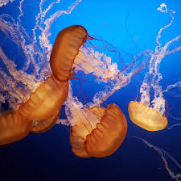
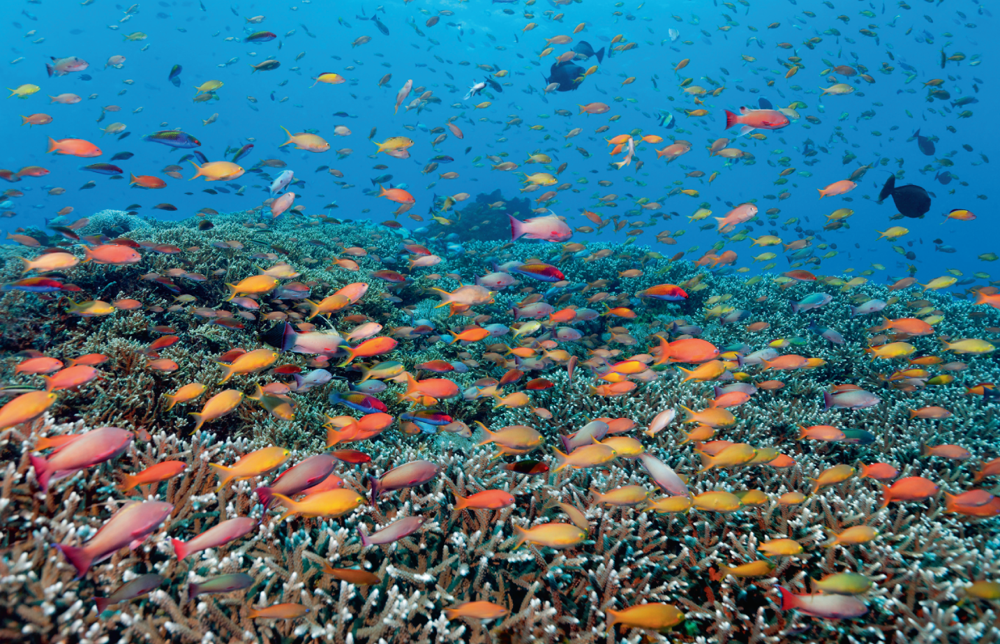
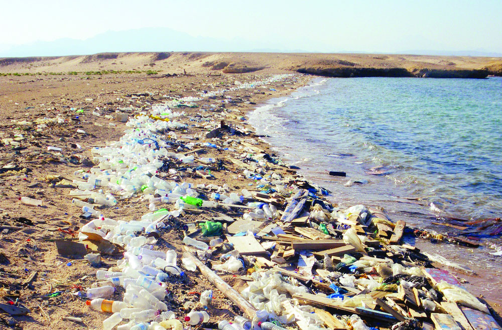

  
SDG 14 memiliki potensi besar untuk mendorong transisi menuju ekonomi laut berkelanjutan (blue economy) yang mampu meningkatkan kesejahteraan masyarakat pesisir. Jika konservasi dan pengelolaan laut dilakukan dengan baik, sektor perikanan berkelanjutan dapat memberikan sumber pangan yang stabil, sekaligus membuka peluang kerja jangka panjang. Penguatan kawasan konservasi laut juga berpotensi memulihkan ekosistem kritis seperti terumbu karang, mangrove, dan padang lamun yang berperan penting dalam mitigasi perubahan iklim. Selain itu, kolaborasi internasional yang semakin maju—baik dalam penelitian, teknologi pemantauan laut, maupun investasi konservasi—dapat mempercepat restorasi ekosistem dan meningkatkan kapasitas negara berkembang. Penerapan inovasi seperti bioteknologi laut, energi terbarukan samudra, hingga teknologi penangkapan ikan ramah lingkungan turut memberikan peluang besar untuk pertumbuhan ekonomi dan stabilitas ekologi.